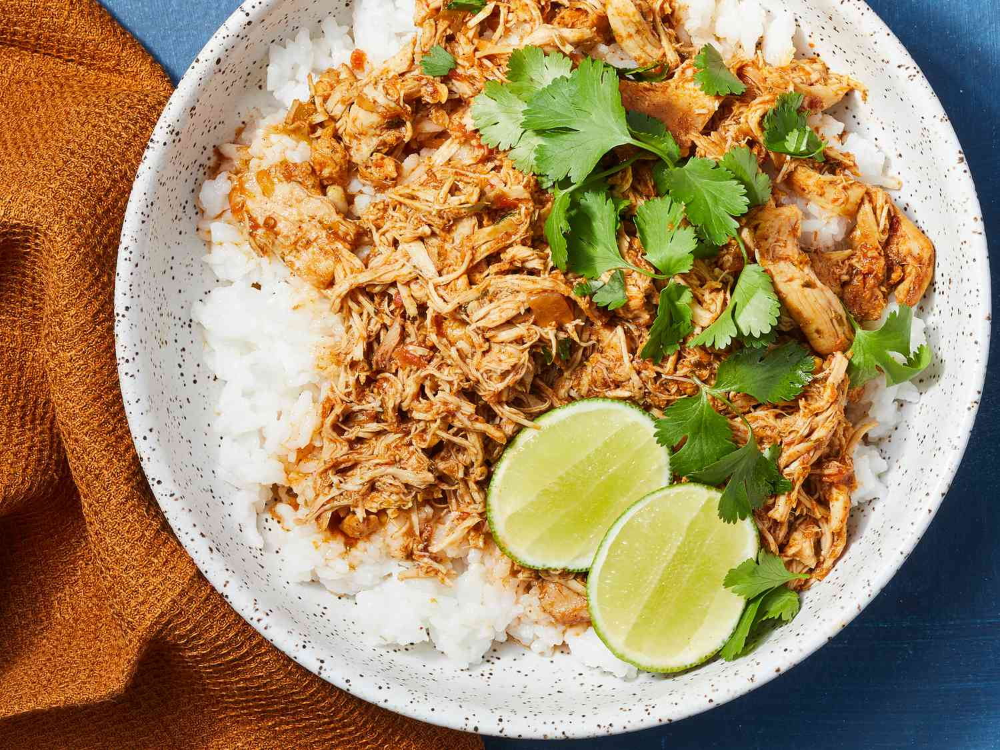

Home
Lime Cilantro Chicken

Description
This slow cooker cilantro-lime chicken is bursting with flavor. Try it in tacos for a nice change from plain chicken.
Ingredients
- 1 Jar Salsa
- 1 Package Dry Taco Seasoning Mix
- 1 Medium Lime, Juiced
- 3 Tablespoons Chopped Fresh Cilantro
- 3 Pounds Skinless, Boneless Chicken Thighs
Steps
- Gather all ingredients.
- Stir salsa, taco seasoning, lime juice, and cilantro together in a slow cooker until well combined. Add chicken and spoon salsa mixture over top to coat.
- Cover and cook until chicken is no longer pink in the center and the juices run clear, on Low for 6 to 8 hours or High for 4 hours. An instant-read thermometer inserted into the center should read at least 165 degrees F (74 degrees C).
- Shred chicken in the crock with two forks, then mix with the sauce.
- Enjoy!